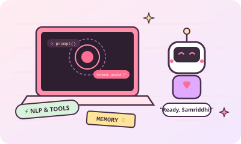

Ongoing

Intelligent Systems · AI
FRIDAY
A personal AI assistant project exploring memory, reasoning, intent recognition, tools, natural-language interaction and future device interaction. Designed to explore how software can understand user requests contextually and execute structured actions.
Python
AI
APIs
Git
GitHub
Status: Active Development
Intelligent Agent